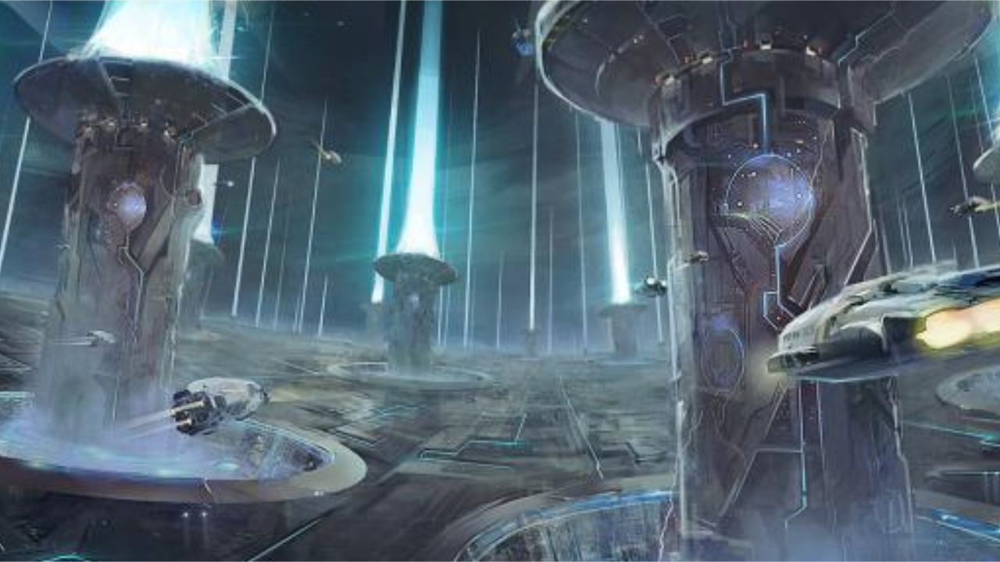

- 近期文章 -
|  |
《从古至今，有音乐参与的“艺术”游戏与番剧中的音乐》今天我打算讲点比较特别的，也就是标题所讲——从古至今，凡是有音乐参与的各式各样的“作品”，或者说“艺术”。 可能现在你已经想到了，如：游戏，电影，电视剧，番剧，广播或者说音乐剧，话剧，各种舞台剧等等。几乎生活中所有的娱乐活动，都有音乐的参与，视频有BGM，配乐，现在流行的短视频，哪一个会不加上一点音乐、音效？ 如标题后半句，我对“古往今来”中“古往”的艺术形式的了解，相比现代的形式少了实在太多。我可能在我的曲子中会用到：木管、小提琴、中提琴。但交响乐中的各个乐器，各个声部，整个交响曲的构成连“一知半解”都“望尘莫及”，更不用说歌剧这类以音乐为辅助，来表现的作品。...... |
《来自多彩世界的明天》中的音乐
一点个人的随想： P.A.的原创作品一直很喜欢，喜欢里面关于少年少女的青春成长故事，还有关于创作者的故事。 《白箱》——动画制作 《TARI TARI》——音乐制作 包括我们今天要聊的作品，关于摄影和绘画还有魔法的故事，不得不说结合魔法之后带来的梦幻的色彩，给了作品更多可以讲的东西。摄影与绘画则与《TARI TARI》中类似，是兴趣爱好。魔法的选择也奠定了整部作品的小清新的梦幻的基调。开头的OP一下就给了我很强烈的感受。...... |